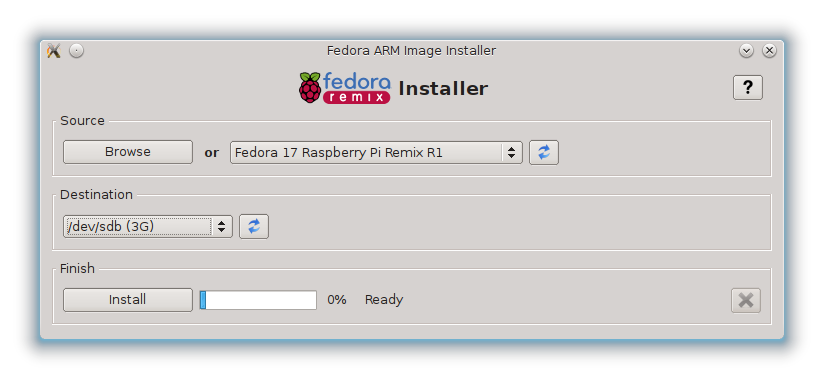
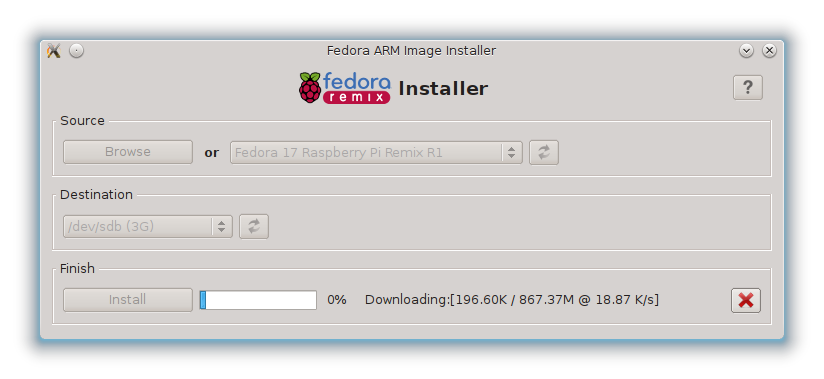
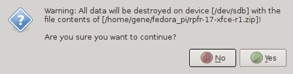
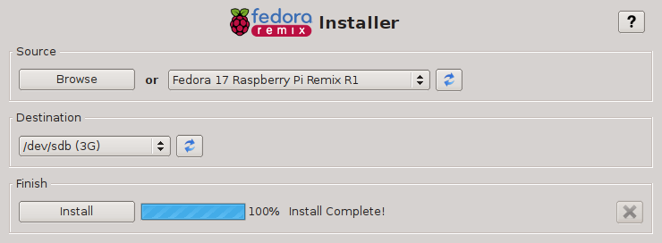

Installing Fedora Linux¶
Installer:
Downloading image:
Write to the disk:
Install complete:



{kind=link}
{kind=link}
{kind=link}
{kind=link}
{kind=link}
{kind=link}
Setting up for remote access¶
SSH server should already be installed and started in your Fedora installation. To check:
# service sshd status
Redirecting to /bin/systemctl status sshd.service
sshd.service - OpenSSH server daemon
Loaded: loaded (/usr/lib/systemd/system/sshd.service; enabled)
Active: active (running) since Thu, 01 Nov 2012 12:06:23 +1000; 9h ago
Main PID: 223 (sshd)
CGroup: name=systemd:/system/sshd.service
└ 223 /usr/sbin/sshd -D
and then:
# ssh localhost
root@localhost's password:
Last login: Thu Nov 1 21:13:07 2012 from zion.gateway
# who
root pts/0 2012-11-01 21:13 (zion.gateway)
root pts/3 2012-11-01 22:07 (localhost)
We are setup for remote login now. So you may now disconnect the TV jack from your Raspberry Pi. The network cable must stay on.
Updating and Adding RPM fusion¶
Install RPMFusion repositories:
# yum localinstall --nogpgcheck
http://download1.rpmfusion.org/free/fedora/rpmfusion-free-release-stable.noarch.rpm
http://download1.rpmfusion.org/nonfree/fedora/rpmfusion-nonfree-release-stable.noarch.rpm
Update system:
# yum -y update
Kernel version:
# uname -r
3.2.27